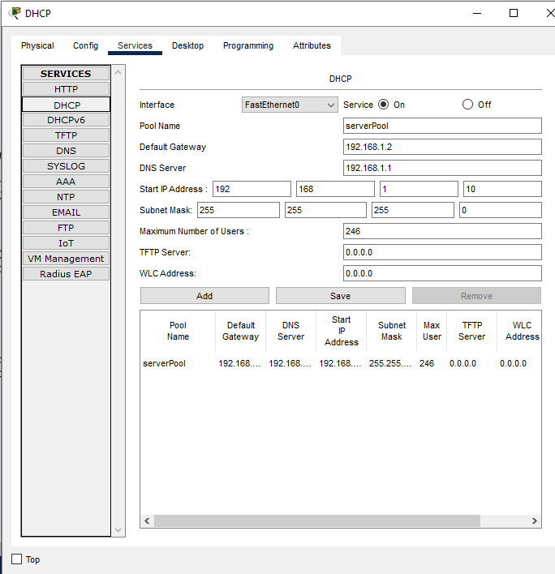
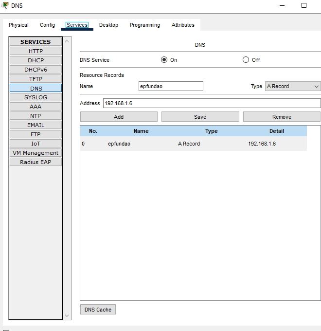
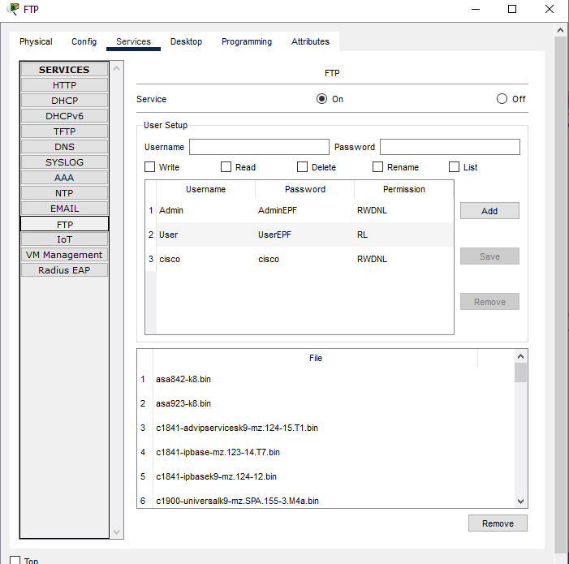

Servidores de Rede
🔧 Servidor DHCP

Função: Atribuição automática de endereços IP aos dispositivos da rede.
Porto: 67/68 (UDP)
Responsável por distribuir endereços IP dinamicamente aos clientes.
📍 Servidor DNS

Função: Resolução de nomes de domínio em endereços IP.
Porto: 53 (UDP/TCP)
Traduz nomes (ex: www.exemplo.com) para endereços IP.
🌐 Servidor Web
Função: Hospedagem de páginas e aplicações web.
Porto: 80 (HTTP) / 443 (HTTPS)
Fornece conteúdo web aos clientes através de navegadores.
📧 Servidor Email

Função: Gerenciamento de mensagens de email.
Porto: 25 (SMTP) / 110 (POP3) / 143 (IMAP)
Processa envio e recepção de mensagens eletrónicas.
📁 Servidor FTP

Função: Transferência de ficheiros entre computadores.
Porto: 21 (Controlo) / 20 (Dados)
Permite upload e download de ficheiros de forma segura.
Ligações Wireless e Topologia de Rede
Estrutura da Rede
📡 Access Points de Alunos: Responsáveis pela conexão dos computadores e dispositivos dos alunos. Distribuídos estrategicamente para cobertura completa da área de aprendizagem.
👨🏫 Access Point dos Professores: Rede separada e prioritária para garantir qualidade de serviço aos recursos educacionais dos docentes.
🔗 Ligações Wired: Servidores conectados via Ethernet ao Switch central para garantir velocidade e estabilidade.
🏢 Componentes Principais:
- Router/Gateway: 192.168.3.1
- Switch Central: Distribuição de tráfego
- Servidores (DHCP, DNS, Web, Email, FTP)
- Access Points que cobrem toda a instituição
- Computadores e dispositivos dos utilizadores
Perguntas e Respostas
❓ Pergunta 1: Qual é o endereço IP da rede local configurada no exercício?
✅ Resposta: 192.168.3.1
❓ Pergunta 2: Qual é a máscara de sub-rede utilizada na rede?
✅ Resposta: 255.255.255.0
❓ Pergunta 3: Qual é o gateway da rede?
✅ Resposta: 192.168.3.1
❓ Pergunta 4: Indique o número de endereços IP disponíveis para os computadores.
✅ Resposta: 254
Explicação: Com a máscara 255.255.255.0, temos 256 endereços totais. Descontando o endereço de rede (192.168.3.0) e o broadcast (192.168.3.255), restam 254 endereços disponíveis.
Explicação Detalhada - Função dos Servidores
🔧 Servidor DHCP (Dynamic Host Configuration Protocol)
O servidor DHCP é responsável por atribuir automaticamente endereços IP aos dispositivos que se conectam à rede. Quando um computador ou tablet se liga, envia um pedido DHCP e recebe um endereço IP válido, máscara de sub-rede, gateway e servidores DNS. Isto elimina a necessidade de configuração manual, tornando a rede mais dinâmica e flexível. É essencial em ambientes educacionais com muitos dispositivos.
📍 Servidor DNS (Domain Name System)
O servidor DNS atua como um "telefone de lista" da internet. Quando um utilizador digita "www.google.com" no navegador, o servidor DNS converte este nome em endereço IP correspondente (ex: 142.250.185.46). Sem DNS, seria necessário memorizar endereços IP numéricos. O sistema é hierárquico e distribuído, permitindo a navegação intuitiva na web.
🌐 Servidor Web (HTTP/HTTPS)
O servidor web hospeda páginas e aplicações que podem ser acedidas através de navegadores. Quando acede a um site, está a comunicar com um servidor web que envia os ficheiros HTML, CSS, JavaScript e imagens. Em ambientes educacionais, pode funcionar como plataforma de aprendizagem, portal de conteúdos ou aplicações educativas. O protocolo HTTPS garante uma comunicação segura e encriptada.
📧 Servidor Email (SMTP, POP3, IMAP)
O servidor email funciona em dois sentidos: SMTP (Simple Mail Transfer Protocol) para enviar emails e POP3/IMAP para receber e gerir mensagens. Cada utilizador tem uma caixa de correio no servidor. Os emails são armazenados em segurança e podem ser acedidos de qualquer lugar. É fundamental para comunicações institucionais, envio de materiais didáticos e notificações.
📁 Servidor FTP (File Transfer Protocol)
O servidor FTP permite a transferência segura de ficheiros entre computadores e o servidor. Professores podem fazer upload de materiais didáticos, estudantes podem entregar trabalhos na plataforma FTP, e ficheiros podem ser distribuídos para toda a rede. Oferece um controlo granular de permissões (leitura, escrita, execução) para diferentes utilizadores e grupos. É mais seguro que métodos tradicionais de partilha de ficheiros.